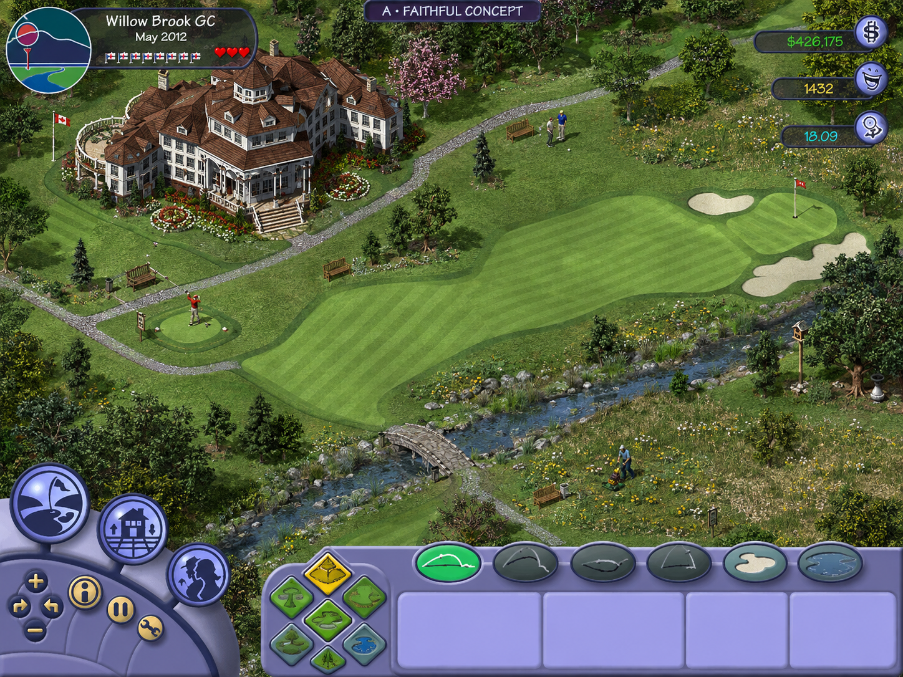

SimGolf / Fresh start
The approved visual foundation.
Two concepts grounded in your original-game references. A preserves the detailed isometric treatment. B explores more dimensional lighting and materials. Both retain the original interface direction and include dandelions.
These are generated concept images, not running game screenshots. Concept B is approved. The live browser art test is now available from the project’s main page.

Inspect the materials
Magnified areas of the selected concept. Switch A/B above to compare the same details.
The game specification
The whole game, not just one pretty hole.
Read whattobuild.md ↗ · Download specification
Construction, golfers, needs, dandelions, divots, staff, facilities, stories, economics, SGA, skills, tournaments, reports and saves—with evidence, unknowns and acceptance scenarios.